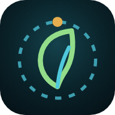

سياسة الخصوصية
EcoBio AI منصة وتطبيق تعليمي وبحثي لرصد التلوث البيئي في محافظة صلاح الدين ونهر دجلة، أعدّها قسم علوم الحياة في كلية التربية للعلوم الصرفة – جامعة تكريت. نوضّح هنا بوضوح ما يجري لبياناتك.
باختصار
- لا يحتاج التطبيق إلى حساب، ولا يجمع اسمك أو بريدك أو رقم هاتفك.
- لا يوجد إعلانات ولا أدوات تتبّع ولا بيع أو مشاركة للبيانات لأغراض تسويقية.
- كل ما يجري على بياناتك من حساب وتحليل يتم داخل جهازك، إلا ما ترسله أنت بنفسك إلى المساعد الذكي أو ما تضيفه بنفسك من مواقع بحوث.
البيانات التي يستعملها التطبيق
| البيانات | متى ولماذا | أين تذهب |
|---|---|---|
| الموقع التقريبي | فقط عند ضغطك «أقرب قضاء لي»، لاختيار أقرب قضاء إليك. | يبقى داخل جهازك ولا يُحفظ ولا يُرسل إلى أي خادم. |
| نصوص وصور تختار إرسالها إلى المساعد الذكي | عند سؤالك المساعد أو طلبك قراءة صورة أو ملف. | تُمرَّر عبر خادمنا (Cloudflare Workers) إلى خدمة Google Gemini لتوليد الإجابة، ولا نحفظها لدينا. |
| مواقع البحوث التي يضيفها الباحث (الاسم واللقب العلمي والجامعة وعنوان البحث والموقع والرابط) | فقط إذا أضفت بنفسك موقع بحثك المنشور ليظهر على الخريطة. | تُحفظ في خادمنا، وتظهر للعموم بعد موافقة مشرفة المنصة. يمكنك طلب حذفها في أي وقت. |
| عيّناتك ونتائج المختبر وملفات Excel | عند استعمال أدوات التحليل. | تبقى في جهازك (ذاكرة المتصفح أو التطبيق) ولا تُرفع إلى أي خادم. |
| الإشعارات | إذا فعّلت التنبيه اليومي بتوقّع الهواء. | تُجدول داخل جهازك فقط. |
البيانات البيئية
القياسات المعروضة بيانات عامة مفتوحة من Copernicus (CAMS وERA5 وGloFAS وSentinel-2) عبر Open-Meteo وMicrosoft Planetary Computer، ومن OpenStreetMap، ومن بحوث منشورة لجامعة تكريت. ينزّلها التطبيق من مستودع المنصة العام على GitHub، وتنزيلها لا يرسل عنك أي معلومة شخصية. هذه البيانات للتعليم والبحث والتوعية، ولا تحل محل محطات الرصد الرسمية.
خدمات الأطراف الأخرى
- Google Gemini: لمعالجة ما ترسله إلى المساعد الذكي فقط. سياسة خصوصية Google.
- Cloudflare: يستضيف خادم المساعد ومواقع البحوث. سياسة خصوصية Cloudflare.
- GitHub وVercel: لاستضافة المنصة وقاعدة البيانات العامة.
- مزوّدو الخرائط (Esri وOpenStreetMap وNASA GIBS) يستلمون طلبات صور الخريطة كأي موقع خرائط.
الأطفال
التطبيق موجّه إلى طلبة الجامعة والباحثين والمهتمين بالبيئة، ولا يجمع عن قصد أي بيانات من الأطفال.
حقوقك والتواصل
لطلب حذف موقع بحث أضفته، أو لأي سؤال عن الخصوصية، راسلنا على البريد الإلكتروني الظاهر في صفحة التطبيق على Google Play أو App Store، وسنرد خلال 30 يوماً. سنعلن أي تغيير على هذه السياسة في هذه الصفحة مع تاريخ التحديث.
Privacy Policy (English)
EcoBio AI is an educational and research app for monitoring environmental pollution in Salah Al-Din Governorate and the Tigris River, made by the Department of Biology, College of Education for Pure Sciences, Tikrit University.
- No account is required. The app does not collect your name, email or phone number. No ads, no trackers, no sale of data.
- Approximate location is used only when you tap “nearest district”, on your device only; it is never stored or sent to any server.
- Text and images you choose to send to the AI assistant are passed through our Cloudflare Worker to the Google Gemini API to generate an answer, and are not stored by us.
- Research sites you add (name, academic title, institution, research title, location and link) are stored on our server and shown publicly after review. You can ask us to delete them at any time.
- Your samples, lab results and spreadsheets stay on your device. Daily air-quality notifications are scheduled locally.
- Environmental data are public open data (Copernicus CAMS, ERA5, GloFAS, Sentinel-2, OpenStreetMap and published Tikrit University studies) downloaded from the platform’s public GitHub repository.
Contact: the email address shown on the app’s Google Play / App Store page. Last updated: 22 October 2026.